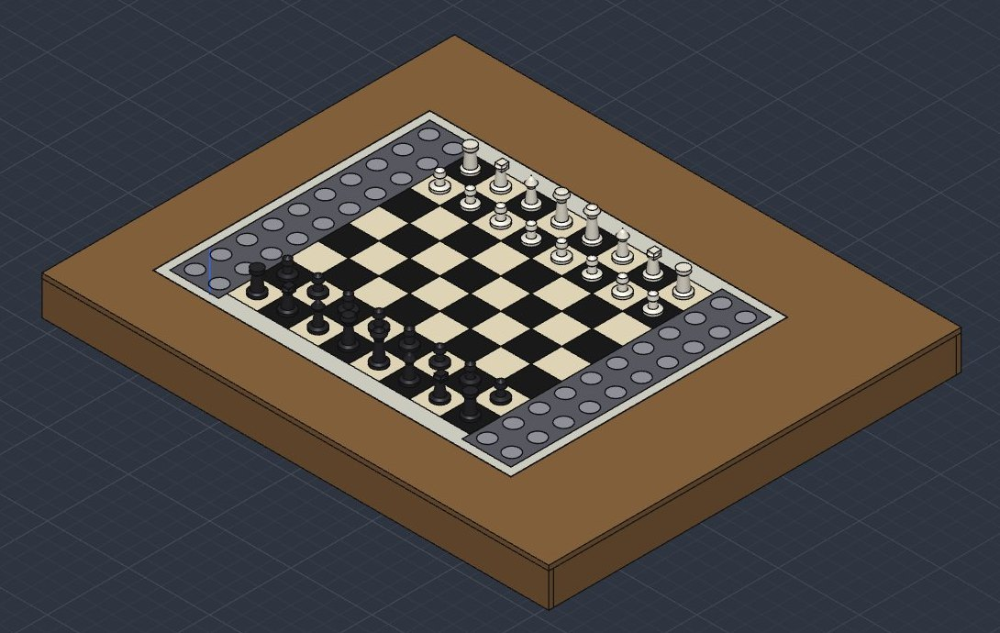

L'échiquier qui joue tout seul.
Deux échiquiers reliés par internet. Tu joues ton coup à la main, la pièce de l'adversaire bouge toute seule, où qu'il soit.

Jouer aux échecs à distance, sur un vrai plateau.
Je voulais pouvoir jouer à distance sur un vrai plateau, avec de vraies pièces, et pas seulement sur un écran.
Chacun joue à la main sur son plateau. Les pièces de l'adversaire se déplacent toutes seules, sous ses yeux.
Deux échiquiers reliés par internet (réseau privé Tailscale).
Stockfish, en local, sans connexion.
Parties en ligne sur Lichess, via son API pour plateaux physiques.
Un cerveau, des mains, des yeux.
L'ordinateur réfléchit, l'ESP32 exécute. Le plateau ne connaît pas les règles : il sait seulement où sont les pièces, et le logiciel en déduit le coup.
Les règles
python-chess pour les règles, l'IA et le réseau. Un PC pour l'instant, un petit Orange Pi Zero 3 plus tard.
Moteurs et capteurs
Un ESP32 en WiFi commande les moteurs et lit les capteurs. Il exécute, il ne décide pas.
CoreXY
Deux moteurs NEMA17 plats, deux pilotes TMC2209, alimentation 12 V, déplacement par fil de pêche.
64 capteurs Hall
Un capteur par case, sur 4 nappes souples. Chaque nappe a sa puce de lecture. Le capteur sent aussi la polarité de l'aimant (blanc ou noir).
Les capteurs disent où il y a des pièces. Le logiciel sait lesquelles. En comparant les deux, il retrouve le coup joué, sans ambiguïté, y compris pour un roque.
Un coffre plat, un portique, un aimant.
Sous le plateau, un électroaimant monté sur un chariot se déplace en X et en Y. Il attire l'aimant collé sous la pièce et la fait glisser.
Ce qu'il y a dedans
- Coffre en MDF 6 mm, intérieur 612 × 496 mm, dessus avec une fenêtre de 420 × 320 mm.
- 2 rails et 2 tiges Ø6 avec 6 roulements LM6UU : le portique glisse en X, le chariot en Y.
- Fil de pêche en CoreXY, 8 poulies U604ZZ, chaque fil enroulé sur un tambour de Ø12.
- Pièces imprimées en 3D : blocs, chariot, supports, griffes de moteur.
- Électroaimant 10 × 10 mm piloté par un module DRV8871.
Est-ce que tout tient, et jusqu'où ça bouge ?
J'ai monté tout l'ensemble en 3D à partir de mes vraies pièces, puis fait calculer, pièce par pièce, tout ce qui se touche quand le portique et le chariot se déplacent. Déplace les curseurs : ce qui se touche passe en rouge.
Les limites de course
| Mini | Maxi | Il faut | Marge | |
|---|---|---|---|---|
| Portique (X) | −45,0 mm | 358,0 mm | −35 → 355 | 10,0 / 3,0 mm |
| Chariot (Y) | 6,0 mm | 316,0 mm | 17 → 305 | 11,0 / 3,0 mm |
À droite, il ne reste que 3 mm : c'est le point le plus serré de la machine. Si la puce de lecture se trouve sous la nappe, le chariot la touche dès X = 350,3 mm et la colonne de cimetière tout à droite devient inaccessible sur 4 places sur 10.
- La nappe descend entre X = 363 et 369 mm, puis sa queue est collée sous le dessus.
- La puce de lecture (boîtier SOIC-24) est sous la nappe.
- Les tambours sont ceux de la version précédente (mêmes cotes).
- Les fils et la carte mère ne sont pas modélisés.
Ce qui est fait, ce qui est estimé.
La V2 est encore sur le papier : tout est dessiné ou calculé, presque rien n'est testé en vrai. Voilà où j'en suis, sans enjoliver.
| Élément | État | Détail |
|---|---|---|
| Coffre MDF, dimensions | Dessiné | Plan fait, fond déjà commandé. |
| Chariots, supports, poulies | Calculé | Contrôlé par calcul. Rien d'imprimé. |
| Nappes de capteurs | Dessiné | Vérifié sous KiCad (0 erreur au contrôle des règles). Rien de commandé. |
| Carte mère | Brouillon | Routée par script, à contrôler dans KiCad. |
| Pilotes TMC2209, homing | À tester | Programmes écrits, jamais testés sur le matériel. |
| Électroaimant | Essai partiel | Testé sur breadboard : force juste, l'aimant chauffe. |
| Capteurs Hall | V1 validé | Testé en V1 câblé à la main. Pas encore sur nappe, pas sur 64. |
| Logiciel de jeu | Testé | Le moteur de règles en réseau fonctionne sur mon ordinateur. |
La suite
- Imprimer un premier testUn bloc, le chariot, un support : vérifier que les roulements et poulies s'ajustent.
- Finir la carte mèreContrôle sous KiCad, essai à l'échelle 1:1 avec les vrais modules, puis commande.
- Commander une première nappeUne seule bande d'abord, pour tester les capteurs.
- Tester moteurs et électroaimantPilotes TMC2209, détection de blocage, courant de l'électroaimant.
- Écrire le code de la V2Lecture des 64 capteurs, déplacement des pièces, parties en ligne.